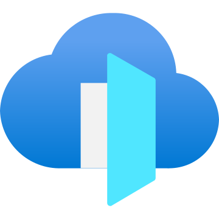
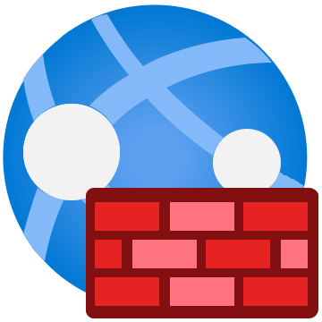
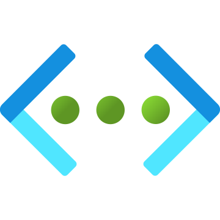
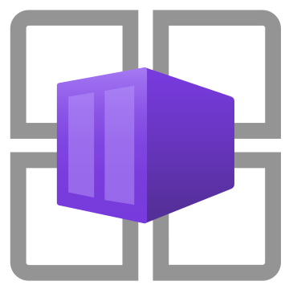
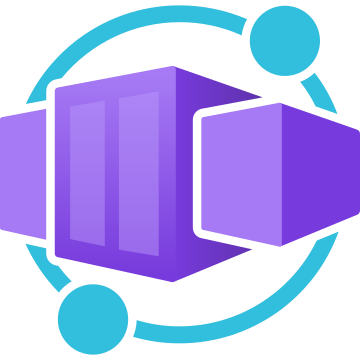
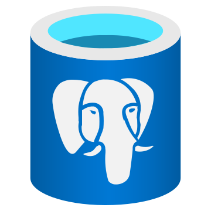
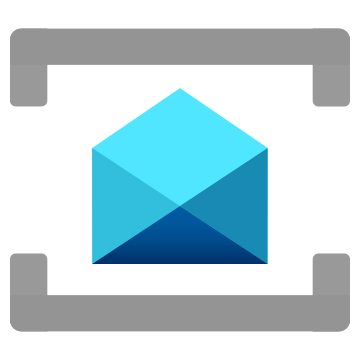
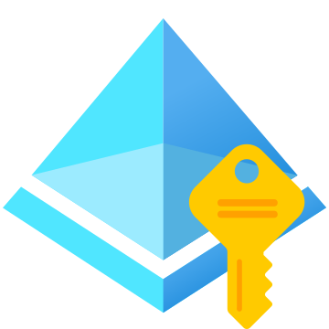
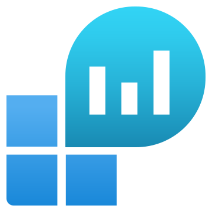

Reference topology
What you will build toward
A production-shaped Container Apps environment with private data, controlled edge, and least-privilege identity.
Internet → controlled edge

Front Door global edge · TLS
WAF policy OWASP rules

Container Apps environment · VNet-injected · zone-redundant · workload profiles
order-api external ingressMI · 90/10 split
catalog
internal ingress

worker no ingressKEDA scaled
reconcile
scheduled job
Backing services
Key Vault
Secrets User

PostgreSQL private access
Service Bus KEDA → worker
Managed identity workload auth
Log Analytics logs · KQL · alerts